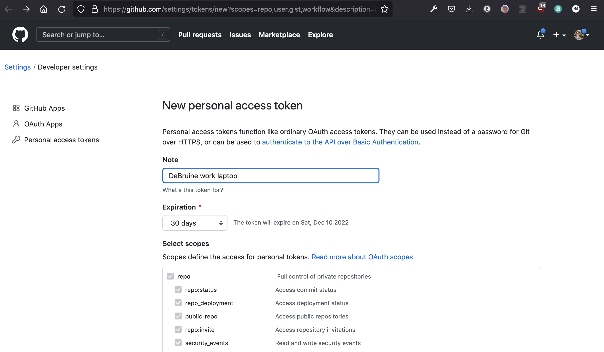
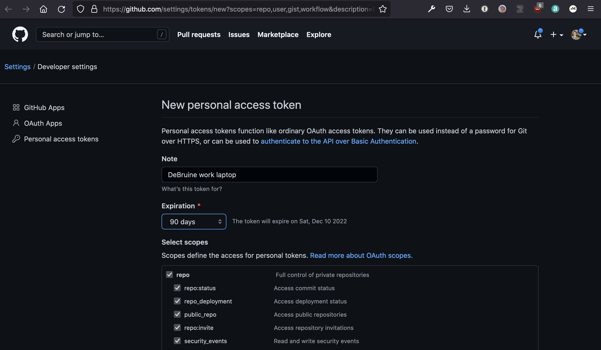
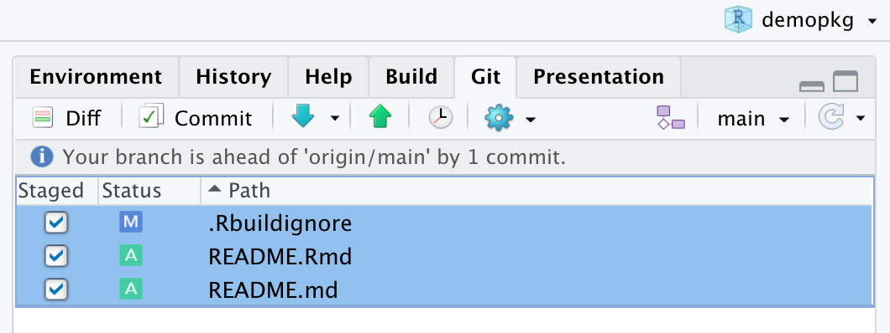
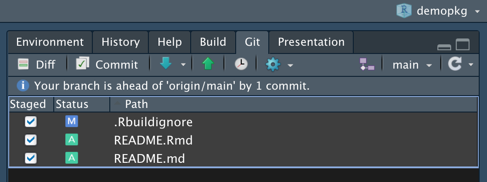
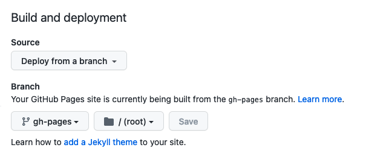
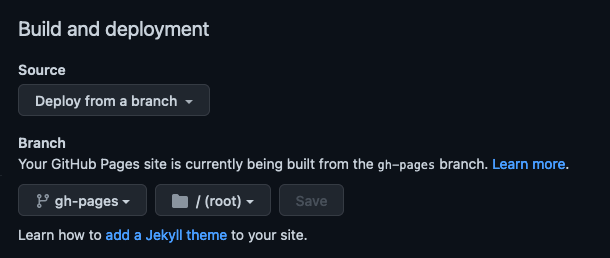
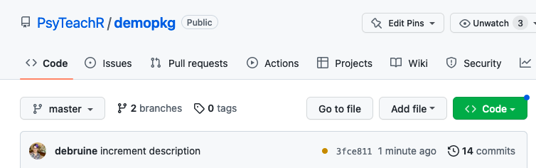
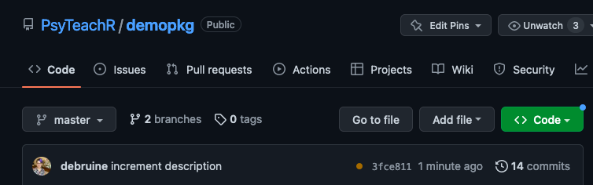

9 Sharing your package
Set up a github account and make a package repository to share your package and pkgdown website.
9.1 Setting up
You need to install and set up git and set up a github token on each new computer.
9.1.1 Install git
You will need to have git installed on your computer to complete this chapter. You can check if git is already installed on your computer by going to Shell... under the Tools menu (or just open a terminal window) and typing which git. If you get an answer like /usr/local/bin/git, then git is already installed. If not, install git and then use which git to check where it is installed.
Go to Global Options... from the Tools menu and set the location of your git executable to the location from the previous step.

9.1.2 Set up git
If your project doesn’t already use git, set it up with this function:
It will list all of your files and ask if it’s OK to commit them. Choose the affirmative option (e.g., “Yes”, “Absolutely”, “Yeah”).
It will than ask “• A restart of RStudio is required to activate the Git pane Restart now?”. Choose the affirmative option and wait for the restart.
9.1.3 Set up GitHub
Now, set up your github repository. If you don’t already have a github account, you need to make one first.
Next, you need to create a “token” and save it on your local computer. If you think you’ve already done this in the past, double check with this function:
If you haven’t added a token, enter this function into the console.
It will open up a website where you can set a note, usually the name of the computer you’re using this token on. You’re meant to set it to expire for security purposes, but you can also set it up without an expiry date.


After you set up your token, make sure to copy the value (if you forget and close the window, you can just make another token). Type the following code into the console and follow the instructions to set your token.
To double-check the setup, run this:
• GitHub host: 'https://github.com'
• Personal access token for 'https://github.com': '<discovered>'
✖ Can't get user information for this token.
Error in `gh()`:
! GitHub API error (403): Resource not accessible by integration
ℹ Read more at
<https://docs.github.com/rest/reference/users#get-the-authenticated-user>9.2 Add Repository
Now we can add this project to your github repositories. This only needs to be done once for each project.
ℹ Defaulting to 'https' Git protocol
✔ Setting active project to '/Users/lisad/rproj/demopkg'
✔ Creating GitHub repository 'debruine/demopkg'
✔ Setting remote 'origin' to 'https://github.com/debruine/demopkg.git'
✔ Setting URL field in DESCRIPTION to 'https://github.com/debruine/demopkg'
✔ Setting BugReports field in DESCRIPTION to 'https://github.com/debruine/demopkg/issues'
There is 1 uncommitted file:
* 'DESCRIPTION'
Is it ok to commit it?Allow usethis to commit any uncommitted files.
✔ Adding files
✔ Making a commit with message 'Add GitHub links to DESCRIPTION'
✔ Pushing 'main' branch to GitHub and setting 'origin/main' as upstream branch
✔ Opening URL 'https://github.com/debruine/demopkg'Your web browser should open up the page https://github.com/yourusername/demopkg
9.2.1 Install from GitHub
Now you (and others) can install your package via GitHub with the following code. (Replace “psyteachr” with your github username.)
9.2.2 Commit and push changes
After you make any changes to your project, you will need to commit and push changes. Committing means saving a snapshot of the changes to your computer, and pushing means sending those changes to github.
Edit the README file to include the code for installing your package from github. Make sure to set that code chunk to not evaluate; you don’t want to install the package every time you run your README code.
{{r, eval = FALSE}} devtools::install_github("psyteachr/demopkg")
Knit the README, then go into the Git tab in the upper right pane. You should see a list of files that have changes. Select them all and click on the staged checkboxes, then click “Commit”.


Write a commit statement like “pkgdown website” and click the Commit button. You should see a popup that ends with text like this:
>>> /usr/local/git/bin/git commit -F [master 4d52aee] pkgdown website
2 files changed, 2 insertions(+), 2 deletions(-)If there were no errors, you can close this box and the review changes interface.
A “commit” creates a snapshot of your project on your computer, so you can always go back to this version, but it doesn’t update the version on the web. For that, you need to “push”. Click the green up arrow in the git pane.
You’ll see a popup with text like this:
>>> /usr/bin/git push origin HEAD:refs/heads/main
To https://github.com/PsyTeachR/demopkg.git
1199f67..4d52aee HEAD -> mainIf there were no error message, go ahead and close this.
9.2.3 Terminal
You may prefer interacting with git via the command line. If not, you can skip this section.
Add something to the README and re-knit to create changes. Then go to the Terminal in the console pane and type git status. You should see output like this, with the changed files in red.
(base) ~/rproj/demopkg > git status
On branch main
Your branch is up-to-date with 'origin/main'.
Changes not staged for commit:
(use "git add <file>..." to update what will be committed)
(use "git checkout -- <file>..." to discard changes in working directory)
modified: README.Rmd
modified: README.md
no changes added to commit (use "git add" and/or "git commit -a")This shows you a list of what files have changes. Stage all of the files for committing with git add *. Now if you run git status, the changed files will be green, which means they’re ready to commit.
Commit them to your local machine with git commit -m "Updates to README". The -m signals that the next thing in quotes will be the commit message.
(base) ~/rproj/demopkg > git commit -m "Updates to README"
[main 5ae4e39] Updates to README
2 files changed, 2 insertions(+), 2 deletions(-)Send the commit to the web version with git push.
(base) ~/rproj/demopkg > git push
Counting objects: 4, done.
Delta compression using up to 8 threads.
Compressing objects: 100% (4/4), done.
Writing objects: 100% (4/4), 437 bytes | 0 bytes/s, done.
Total 4 (delta 3), reused 0 (delta 0)
remote: Resolving deltas: 100% (3/3), completed with 3 local objects.
To https://github.com/debruine/demopkg.git
19dfbb3..5ae4e39 main -> mainTL;DR:
9.3 GitHub Pages
We’re going to set up a way to turn your pkgdown site into a webpage hosted by github.
9.3.1 Set up pkgdown for github pages
First, we’ll configure pkgdown to use github pages. You only need to do this once for each package project. We could have set up pkgdown this way in Chapter 7, but your project needs to be linked to a github repository first. Run the following function and overwrite the existing _pkgdown.yml file if asked.
This will update some files and add a new directory called .github that contains a script that will build your pkgdown website every time you push changes to github. You should also see some output that instructs you to re-run the package documentation.
Commit any changes to the project locally and push them to github using the git tab or terminal methods described above.
9.3.2 Set up website
Go to your github page and click the Settings item in the top menu and then the Pages item in the left menu. If your site is live, there will be a link at the top of this page. Click it and have a look at your website!
If not, you may need to change some settings. Under Build and Deployment, make sure the Source is set to “Deploy from branch”, the Branch is set to “gh-pages”, and the folder is set to “/(root)”.


Now, whenever you push changes to your repository, a script will rebuild your pkgdown site and update it. This can take a few minutes. You’ll see a small yellow dot next to the last commit message and a timer to indicate that the script is running. When it turns green, your script is done and the website has been updated. If the dot turns red, that means there was a problem running the pkgdown script; you can click on the Actions menu item to get more details.


9.4 Glossary
9.5 Further Resources
- Happy Git with R Bryan et al. (n.d.)